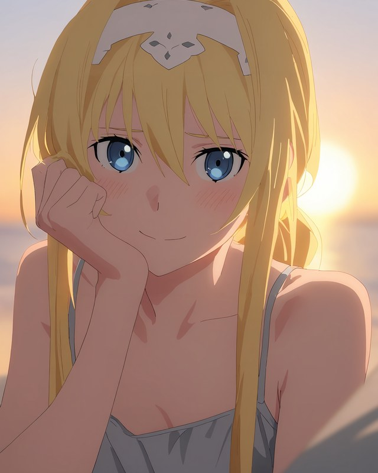
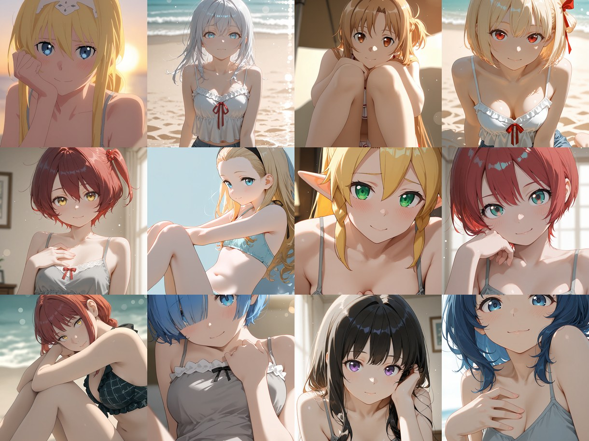
Fanart / R15 二次創作
Fanart Select [R15]
R15対象の二次創作キャラクターごとのAIイラストをまとめたシリーズです。
各キャラクターのサンプルを公開しています。
本編・追加イラスト・過去公開分は、
chichi-puiメンバーシップ「R15 二次創作アーカイブ」でまとめてご覧いただけます。
chichi-puiメンバーシップ「R15 二次創作アーカイブ」
- 月額200コイン以上のプランで対象作品をご覧いただけます。
- 本編・追加イラストをまとめてご覧いただけます。
- 過去公開分もアーカイブしています。
※メンバーシップページにはR15作品が含まれます。15歳未満の方は閲覧できません。
※Fanart Selectは非公式ファンアートです。各作品の公式・権利者様とは一切関係ありません。
キャラクター一覧
ARYA アーリャ
ASUNA アスナ
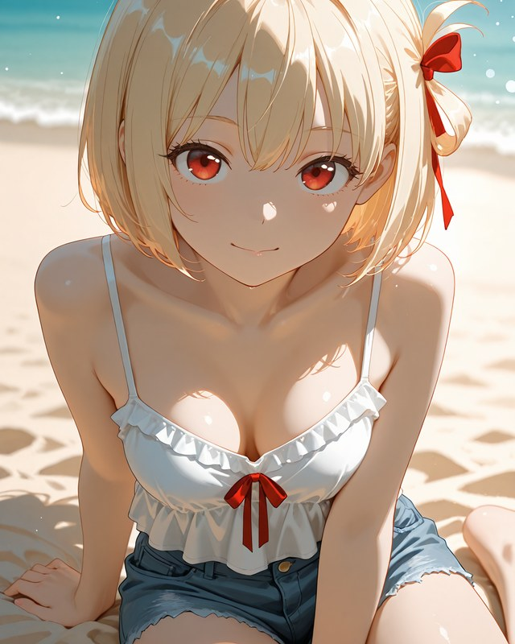
CHISATO 千束
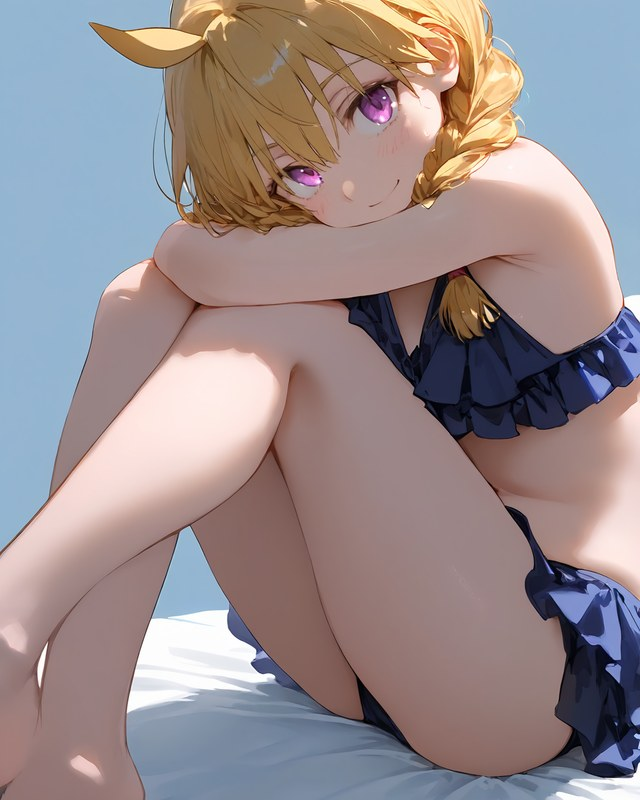
GABU ガブ
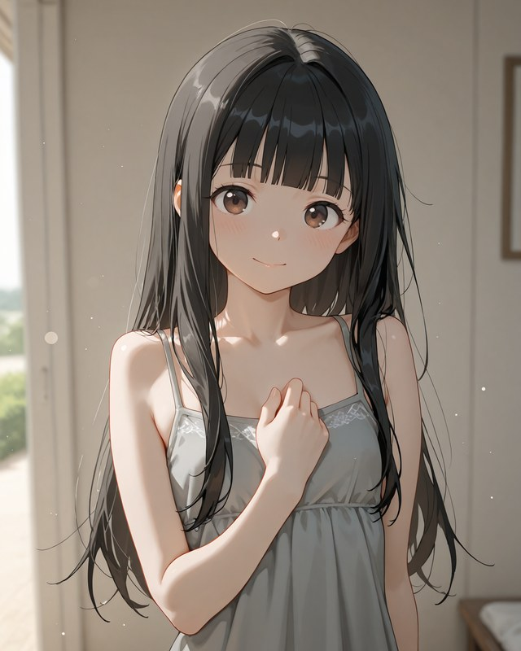
KAJU 佳樹
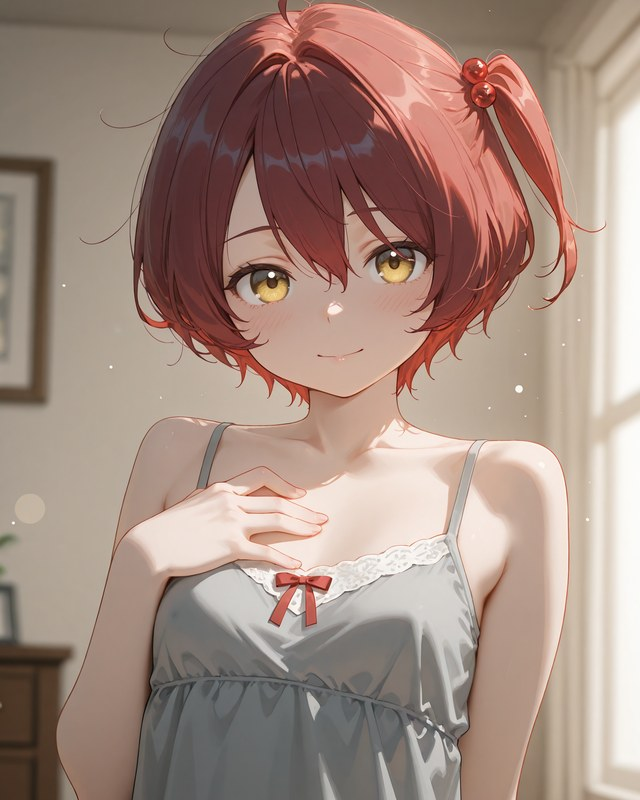
KOMARI 小鞠
KURUMI クルミ
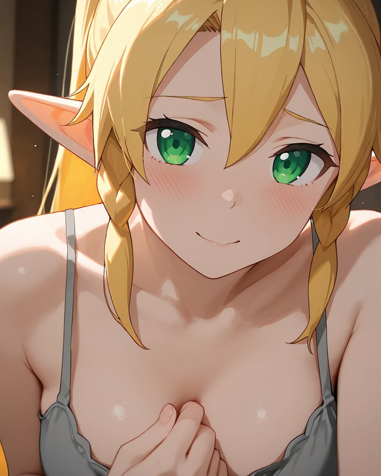
LEAFA リーファ
LUMINOUS ルミナス
MACHU マチュ
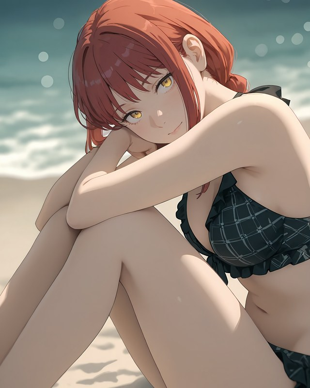
MAKIMA マキマ
MASHA マーシャ
MEGUMIN めぐみん
MILIM ミリム
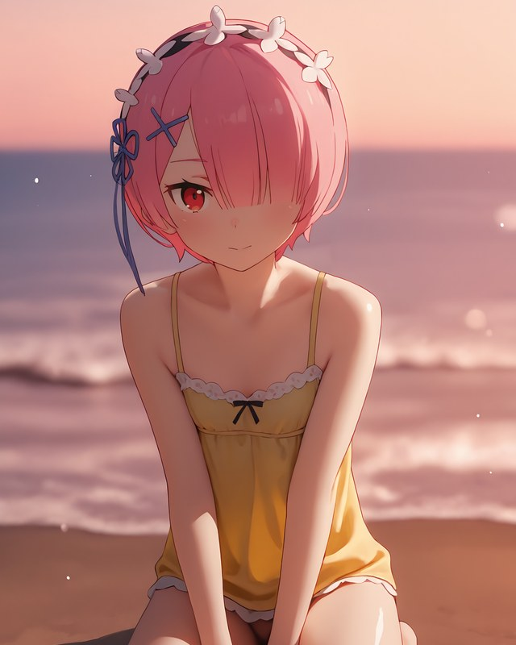
RAM ラム
REM レム
ROXY ロキシー
SAGIRI 紗霧
SAKURAKO さくらこ
SHIRO 白
SHIZUKA シズカ
SHUNA シュナ
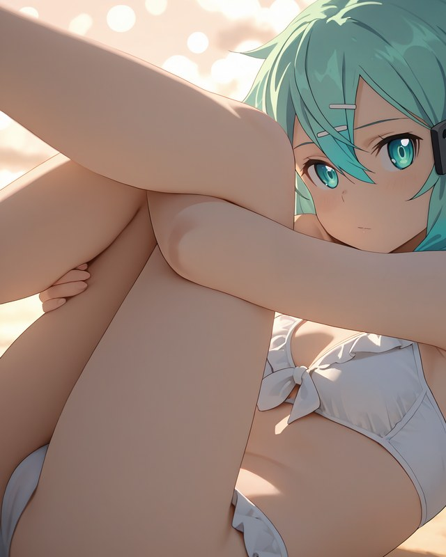
SINON シノン
SION シオン
TAKINA たきな
ULTIMA ウルティマ
URUSHI うるし
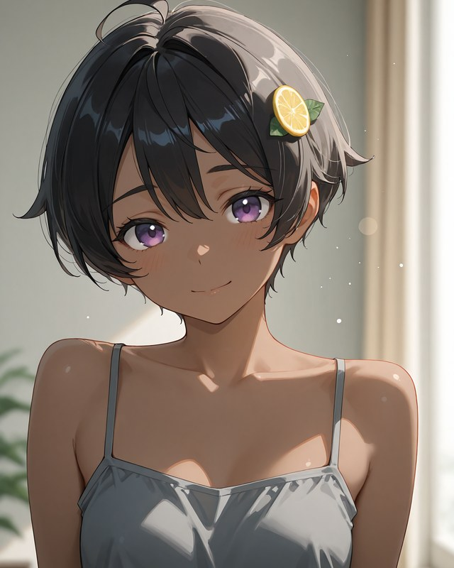
YAKISHIO 焼塩
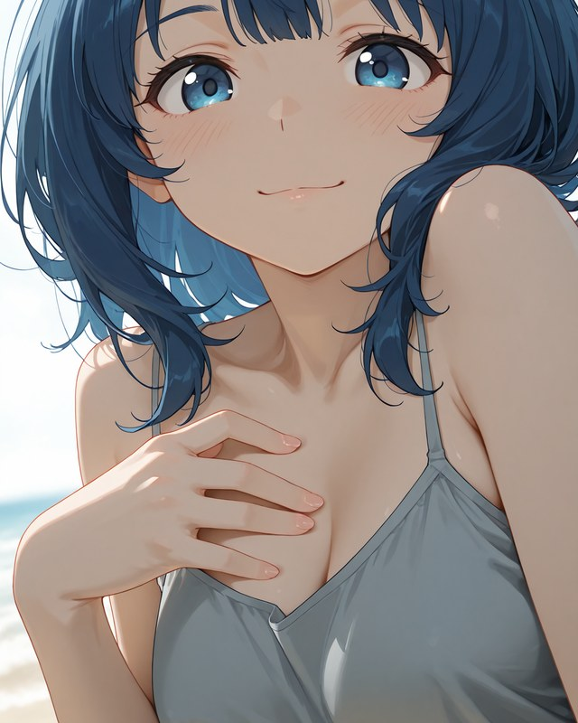
YANAMI 八奈見
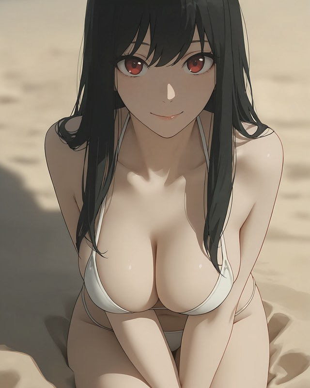
YOR ヨル
YUKI 有希
YUNYUN ゆんゆん
FUTABA 双葉
INORI いのり
KAEDE かえで
KOGA 古賀
MAI 麻衣
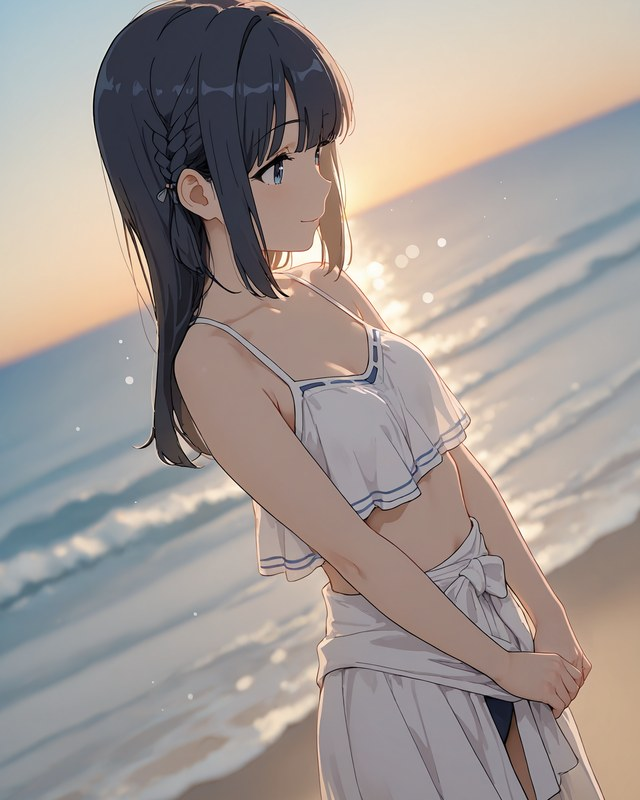
SHOUKO 翔子
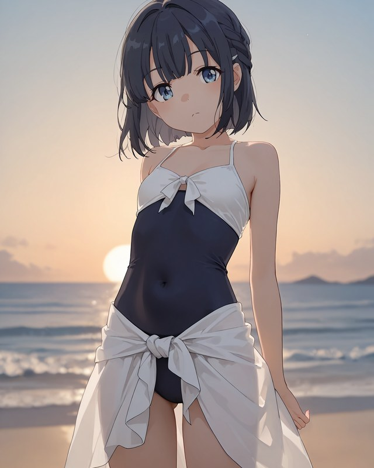
SHOUKO JR 翔子 JR
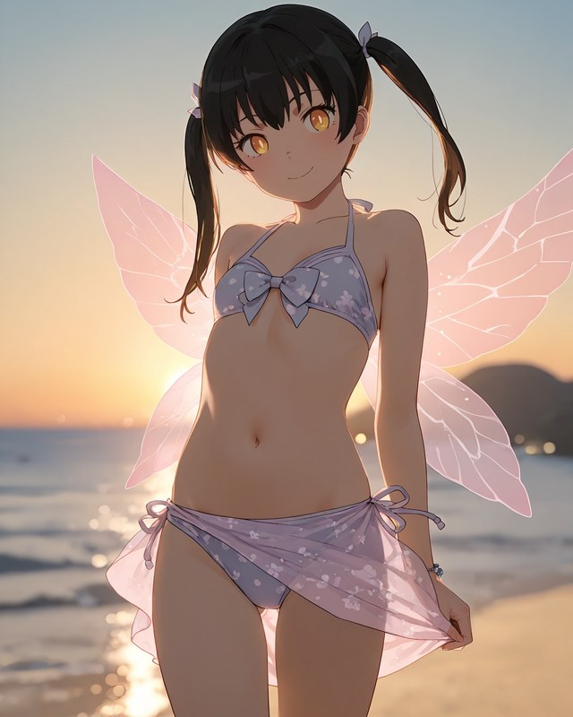
TAMAKI たまき
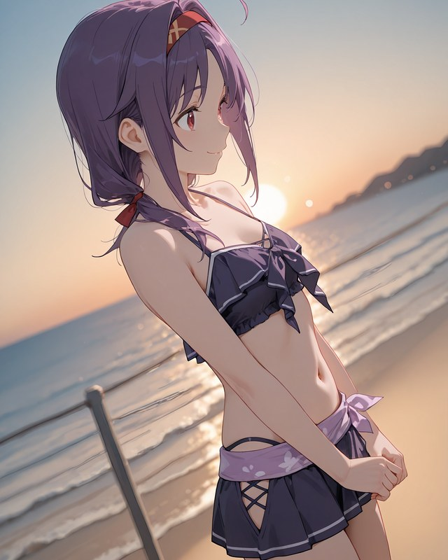